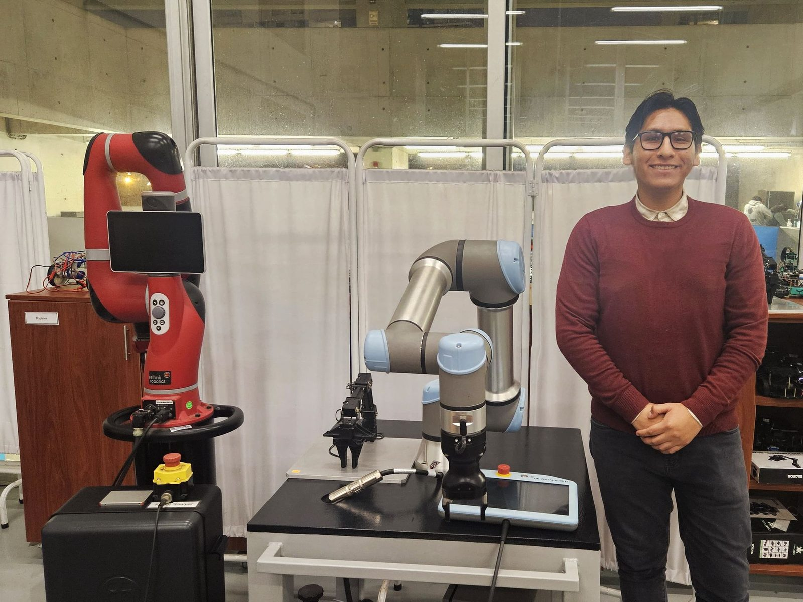
Miguel Olórtegui
I'm Mechatronics Engineer
Open to robotics engineering roles and applied research projects
of my Mechatronics Engineering class
robot platforms programmed
university courses taught or assisted
robotics and control projects
About
My name is Miguel Olórtegui. I am a Mechatronics Engineer from the University of Engineering and Technology (UTEC) in Lima, Peru, with a strong background in robotics and control systems. I have worked with various robotic manipulators, including the UR5, Sawyer, and Open X Manipulator, where I applied advanced control strategies such as nonlinear controllers to enhance system performance and precision.
My experience includes both the theoretical and practical aspects of robotic manipulation and control, from programming and configuring robotic arms to troubleshooting and improving system behavior. This hands-on work has strengthened my ability to develop innovative solutions and optimize performance.
I am currently pursuing a Master's degree at UTEC. My thesis develops a learning-from-demonstration algorithm for robotic assistance in fruit picking on a conveyor belt, using computer vision and a Unitree H1-2 humanoid robot.
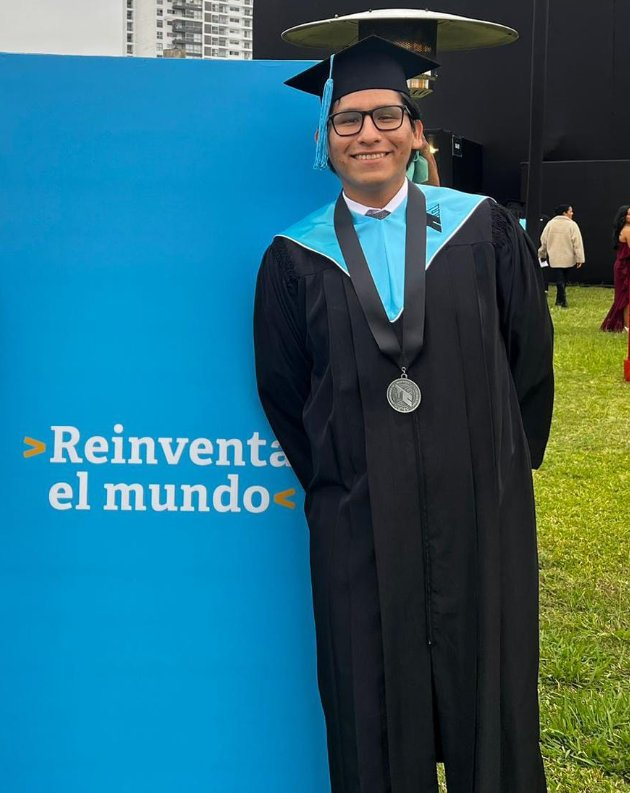
Robotics & Mechatronics
During my engineering studies, I developed a strong academic and practical foundation in robotics, with a particular emphasis on robotic manipulators. This included the application of control systems, as well as concepts such as kinematics and dynamics. Additionally, I complemented this specialization with knowledge of mobile robotics. Beyond the technical domain, I consistently demonstrated strong communication skills, showing confidence and clarity in oral presentations, both in academic settings and team projects.
- City: Lima, Perú
- LinkedIn: miguel-olortegui-h
- GitHub: Migueltoh2309
- Degree: B.Sc. Mechatronics · M.Sc. student
- Email: molortegui@utec.edu.pe
Skills
Tools and techniques I use in my projects, from modeling and simulation to running code on real robots and embedded hardware.
Programming
Robotics & Simulation
Control & Planning
Computer Vision
Embedded & Automation
Academic Background
Bachelor's degree in Mechatronics Engineering from the Universidad de Ingeniería y Tecnología (UTEC), ranked in the top 10% of the class with a specialization in robotics, and currently pursuing a Master's degree at UTEC focused on humanoid robotics, learning from demonstration and computer vision. My professional objective is to drive technological development in my country through innovation and the creation of robotic systems that have a positive societal impact.
Undergraduate
Bachelor of Mechatronics Engineering
2019 - 2024
Universidad de Ingeniería y Tecnología, Lima, Perú
Top 10% of the class, specialization in robotics. Academic training focused on the fundamental principles of robotics, mechanical design, and automation, with a strong foundation in kinematics, control systems, electronics, and programming.
Undergraduate Thesis
Trajectory control of a double-propeller wall-climbing robot for the non-invasive exploration of heritage sites. More about the thesis →
Graduate
Master of Science in Engineering (in progress)
2026 - Present
Universidad de Ingeniería y Tecnología, Lima, Perú
Maestría en Ciencias de la Ingeniería, Graduate School. Advisor: Dr. Ruth Canahuire.
Thesis: Development of a learning-from-demonstration algorithm for robotic assistance in fruit picking on a conveyor belt using computer vision and a humanoid robot.
Markerless multi-camera capture of human demonstrations, whole-body and bimanual control of a Unitree H1-2 humanoid, and RGB-D perception, validated in MuJoCo. More about the thesis →
Projects
As part of my academic training, I have led and contributed to several projects in the fields of robotics and control systems. These experiences enabled me to apply engineering theory to real-world applications, enhance my technical competencies, and develop practical skills in system design, control implementation, and automation.
Graduate and current projects
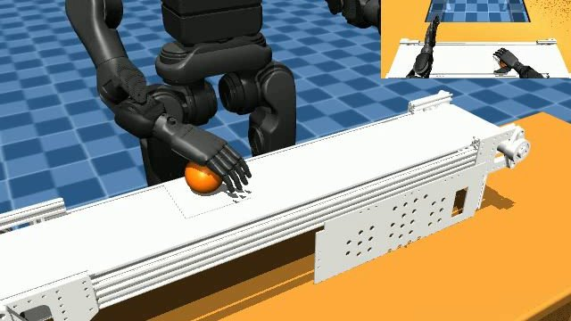
🤖 Master's Thesis
Learning from Demonstration for Fruit Picking on a Conveyor Belt with the Unitree H1-2 Humanoid
View project
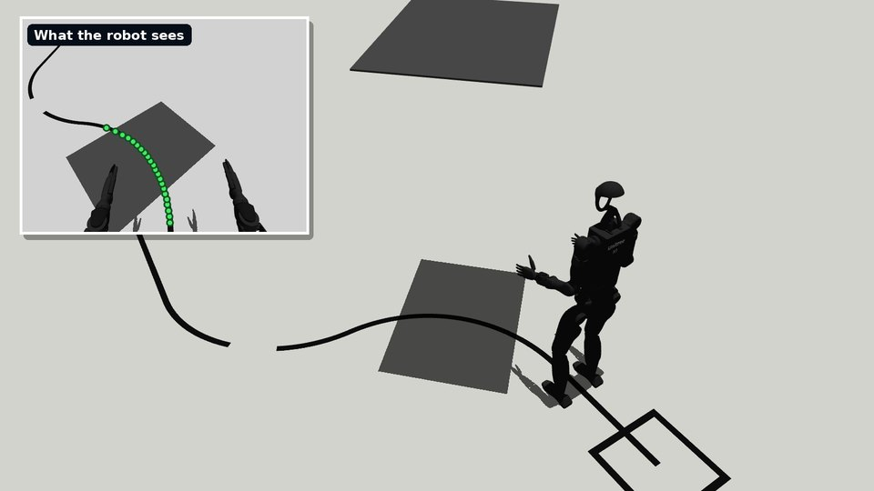
🛤️ Humanoid Line Follower
Unitree H1-2 Walking Along a Line Using Only Its Head Camera, Validated in Simulation
View project
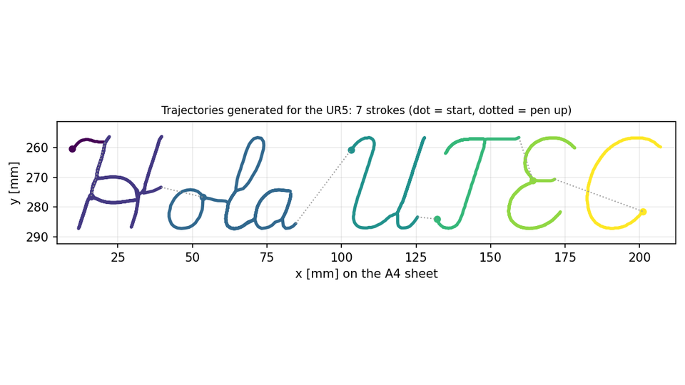
🎨 Painter Robot
UR5 Robot that Draws Images and Text on Paper with Force-Calibrated Contact
View project
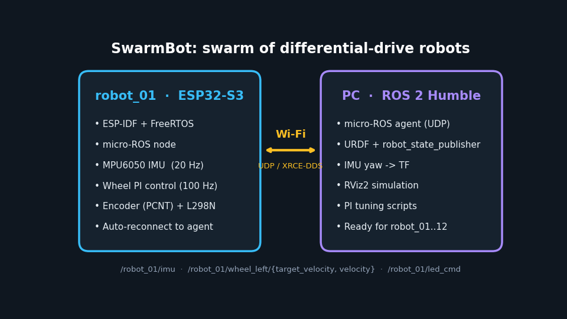

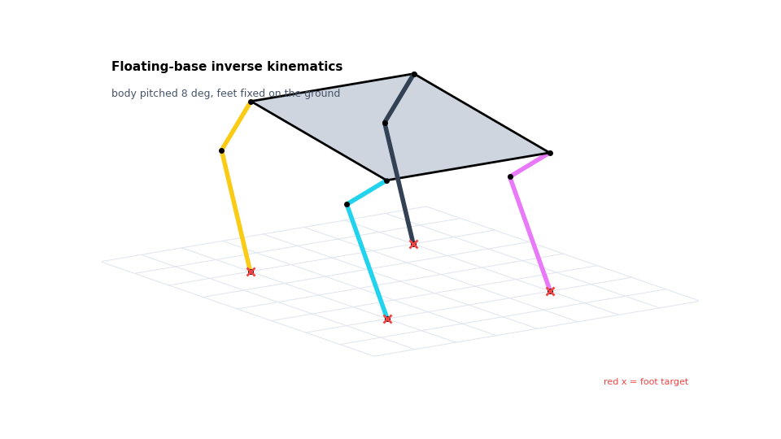
🐈 Quadruped Cat Robot
Floating-Base Inverse Kinematics in MATLAB and Trot Gait on an ESP32 with 8 Servos
View project
Undergraduate projects
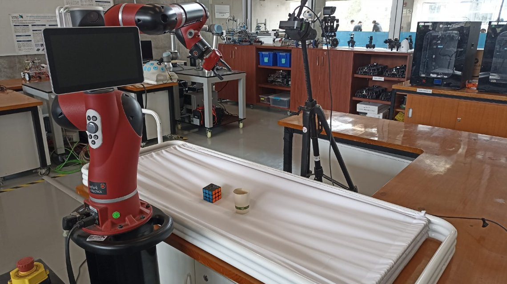
🤖 Autonomous Robotics
Autonomous Trajectory Generation for Pick-and-Place Tasks Using the Sawyer Robot
View project
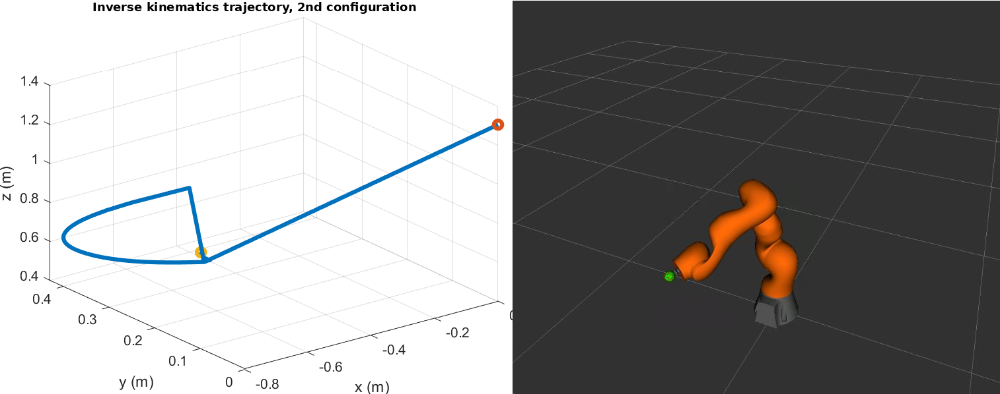
🧠 Fundamentals of Robotics
Forward and Inverse Kinematics, Dynamics, and Control of a Modified 7-DOF KUKA iiwa 14 Robot
View project
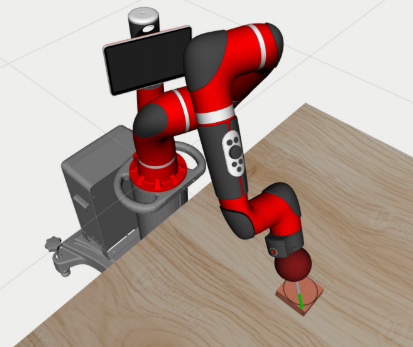
🔬 Advanced Robotics
Vision-Based Intuitive Arm Motion Transmission for Tele-Surgery Using the Sawyer Robot
View project
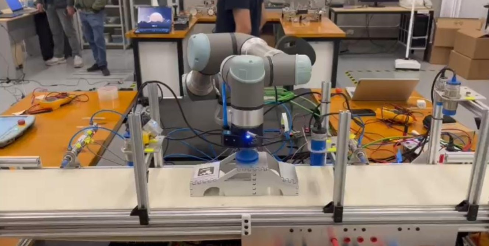
🏭 Industrial Robotics
Automated Detection and Handling System for Car Bodies in an Automotive Production Line
View project
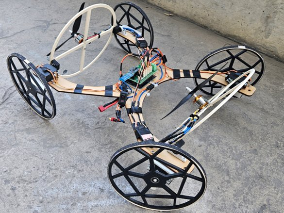

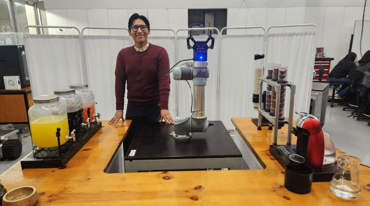

Teaching
Teaching is a big part of my work at UTEC: I lead laboratory sessions for first-year students and support courses of the Mechatronics Engineering program, helping students turn their first ideas into working mechatronic systems.
Current roles
Laboratory Instructor · Introduction to Mechatronics Engineering
2026 - Present
UTEC, Lima, Perú
Lead the laboratory sessions of the course, guiding first-year students through hands-on mechatronics projects, from the first design to a working prototype.
Senior Teaching Assistant
2026 - Present
UTEC, Lima, Perú
Senior teaching role supporting courses of the Mechatronics Engineering program and mentoring students in laboratory work and projects.
Previous experience
Teaching and Lab Assistant
2023 - 2025
UTEC, Lima, Perú
- Assisted in the Digital Circuits course, guiding students in programming and utilizing FPGA devices, specifically the Basys 3 board.
- Provided technical and academic support in the Automatic Control course, mentoring students in using Quanser equipment and configuring PLCs with TIA Portal software.
Robotics Lab Intern
2023 - 2025
UTEC, Lima, Perú
- Collaborated on projects focused on robotics and mechatronic systems, applied to laboratory research and activities.
- Performed preventive and corrective maintenance of laboratory equipment and robotic systems.
- Supported outreach initiatives by delivering workshops and talks on robotics to educational institutions and technical institutes.
Student projects I advised · Introduction to Mechatronics Engineering
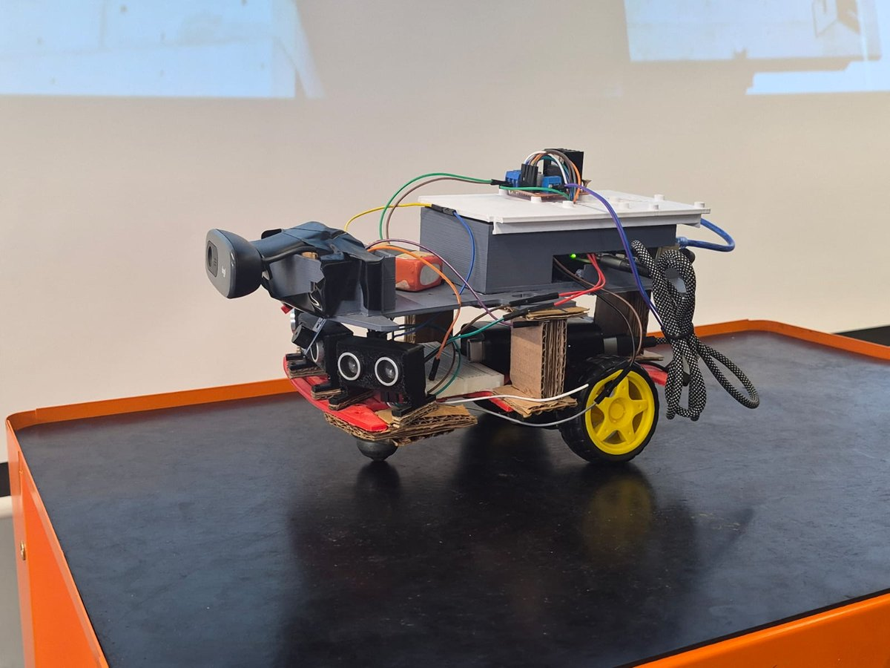
Autonomous Object-Tracking Vehicle
First-year student team · 2026
Differential-drive vehicle that detects and follows a user-selected object with MediaPipe on a Raspberry Pi 5, avoids obstacles with ultrasonic sensors and is controlled from a Wi-Fi mobile app; an Arduino handles the motors over UART.
Project poster (PDF)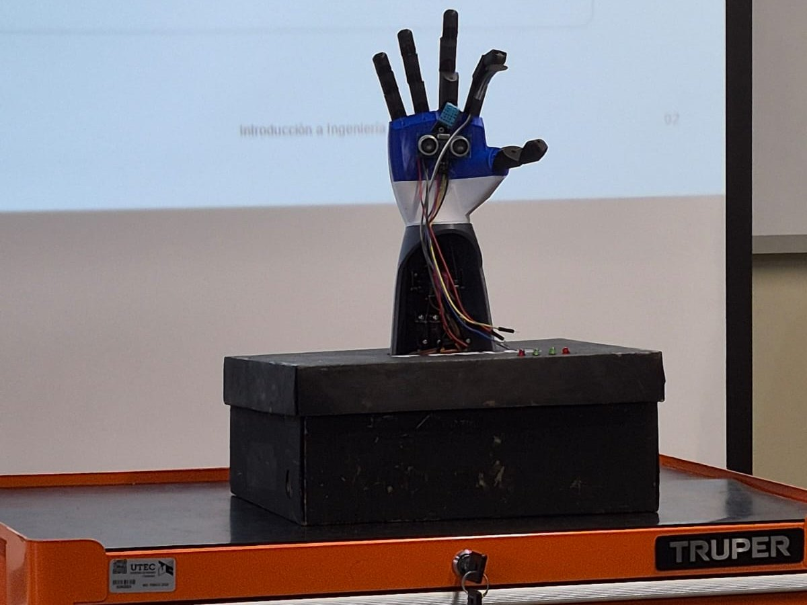
P.A.B.L.O: Bioinspired Robotic Hand
First-year student team · 2026
Five-finger anthropomorphic hand (adapted from InMoov, 3D printed) teleoperated by gestures: MediaPipe tracks the operator's hand and the finger angles are sent over Bluetooth to five servos, with force, distance and temperature sensing.
Project poster (PDF)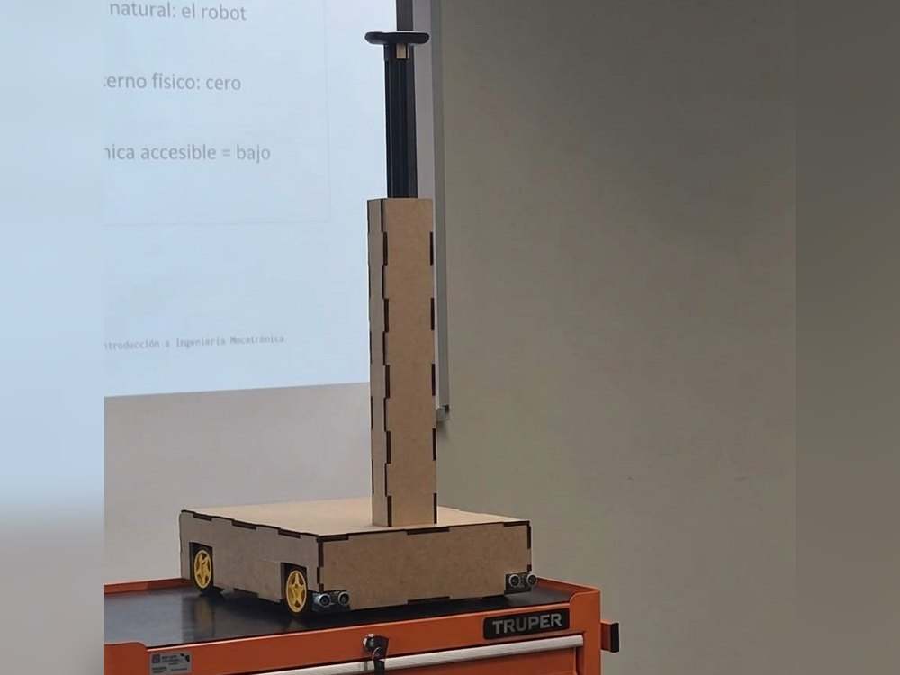
RAM: Mobile Assistant Robot
First-year student team · 2026
Low-cost robot that carries light loads by following the user's palm with OpenCV and MediaPipe on a Raspberry Pi 5, with a Bluetooth manual mode, ultrasonic collision safety and a laser-cut MDF chassis that holds 1.5 kg.
Project poster (PDF)Leadership and additional experiences
Beyond technical projects, I have taken part in activities that strengthened my leadership, communication, and collaboration skills. These include organizing workshops, participating in outreach initiatives, and supporting the operation and maintenance of laboratory equipment. Each experience has contributed to my holistic development as an engineer and team member.
Chair of IEEE CAS UTEC
Led and managed all chapter activities throughout 2022, including the coordination of over 10 events such as workshops and technical talks. Additionally, established connections with various universities to strengthen the chapter’s national presence and collaboration network.
Secretary of IEEE UTEC
Responsible for documenting meetings within the main IEEE branch at UTEC and coordinating inter-university collaborations and events. Successfully organized and supported 5 events in 2023 aimed at strengthening academic and professional ties between institutions.
Peer mentoring and coaching
These programs allowed me to develop leadership and assertive communication skills by providing guidance, support, and follow-up to first-year students and those seeking greater involvement in university activities.
Student representative of Mechatronics Engineering
Served as a student leader, representing the program at academic events and fostering effective communication between students, faculty, and administrative staff.
Volunteering programs
As a volunteer in the Alas por el Futuro program, I received specialized training in the operational use of unmanned aerial vehicles (UAVs) for educational and mapping purposes.
University CADE
A national gathering organized by IPAE Acción Empresarial that brings together outstanding university students from across Peru with high leadership potential.
Beyond the Lab
What I enjoy when I am not working with robots.
Live music
I love going to concerts: there is nothing like experiencing music live.
Competitive Pokémon
I play Pokémon Champions competitively: team building, strategy and reading the opponent, which is not that different from engineering.
3D printing
I design and 3D print parts and pieces, from prototypes for my projects to things just for fun.
Let's work together
I am looking for opportunities as a robotics engineer and for projects or research focused on real-world applications: manipulation, humanoid and mobile robots, control and computer vision. If you think I could help your team, I would be glad to talk.
Lima, Peru